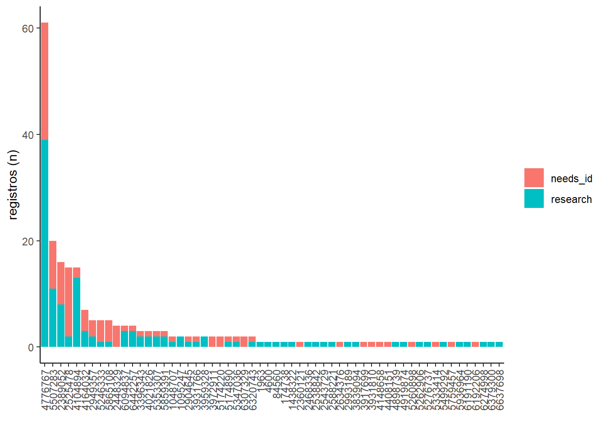

iNaturalist
# packages (https://statsandr.com/blog/an-efficient-way-to-install-and-load-r-packages/)
packages <- c("rinat", "tidyverse", "leaflet", "htmltools")
installed_packages <- packages %in% rownames(installed.packages())
if (any(installed_packages == FALSE)) {
install.packages(packages[!installed_packages])
} else {
invisible(lapply(packages, library, character.only = TRUE)); rm(packages, installed_packages)
}## ── Attaching packages ─────────────────────────────────────── tidyverse 1.3.1 ──## ✔ ggplot2 3.3.6 ✔ purrr 0.3.4
## ✔ tibble 3.1.7 ✔ dplyr 1.0.9
## ✔ tidyr 1.2.0 ✔ stringr 1.4.0
## ✔ readr 2.1.2 ✔ forcats 0.5.1## ── Conflicts ────────────────────────────────────────── tidyverse_conflicts() ──
## ✖ dplyr::filter() masks stats::filter()
## ✖ dplyr::lag() masks stats::lag()Obter dados e metadados
lente <- get_inat_obs_project("lente-ecologica-biodiversidade-do-norte-fluminense-03ec13fb-b9dc-4175-b47e-09dce7fa5848", type = "info", raw = FALSE)## 237 records# extrair registros
lente_obs <- get_inat_obs_project(lente$id, type = "observations")## 237 records## Getting records 0-200## Getting records up to 400## Done.Mapa de registros
Mapa clássico
lente_obs %>%
ggplot(aes(x = as.numeric(longitude), y = as.numeric(latitude))) +
# colour = scientific_name)) +
geom_polygon(data = map_data("world"),
aes(x = long, y = lat, group = group),
fill = "grey95",
color = "gray40",
linewidth = 0.1) +
geom_point(size = 0.7, alpha = 0.5) +
coord_fixed(xlim = range(as.numeric(lente_obs$longitude), na.rm = TRUE),
ylim = range(as.numeric(lente_obs$latitude), na.rm = TRUE)) +
theme_classic() +
labs(x = "Longitude", y = "Latitude")## Warning: Ignoring unknown parameters: linewidth
Mapa interativo
lente_obs %>%
leaflet() %>%
addTiles() %>%
addMarkers(~as.numeric(longitude),
~as.numeric(latitude),
label = ~htmltools::htmlEscape(paste("species=", species_guess, "/", "id=", id)),
popup = ~htmltools::htmlEscape(paste("data=", observed_on)))Registros
Variacao temporal de registros
lente_obs %>%
select(observed_on, quality_grade, species_guess, user_id, quality_grade) %>%
mutate(ano_mes = as.POSIXct(observed_on) %>% zoo::as.yearmon()) %>%
group_by(ano_mes, quality_grade) %>%
summarise(occ = n_distinct(species_guess)) %>%
ggplot(aes(x = ano_mes, y = occ, fill = quality_grade)) +
geom_bar(stat = "identity") +
theme_classic() +
labs(x = "", y = "registros (n)")## `summarise()` has grouped output by 'ano_mes'. You can override using the
## `.groups` argument.
Registros por usuario
# ordenar
ordem <- lente_obs %>%
select(observed_on, quality_grade, species_guess, user_id, quality_grade) %>%
mutate(ano_mes = as.POSIXct(observed_on) %>% zoo::as.yearmon()) %>%
group_by(user_id) %>%
summarise(occ = n_distinct(species_guess)) %>%
arrange(-occ) %>% pull(user_id)
# grafico
lente_obs %>%
select(observed_on, quality_grade, species_guess, user_id, quality_grade) %>%
mutate(ano_mes = as.POSIXct(observed_on) %>% zoo::as.yearmon()) %>%
group_by(user_id, quality_grade) %>%
summarise(occ = n_distinct(species_guess)) %>%
arrange(-occ) %>%
ggplot(aes(y = occ, x = factor(user_id, levels = ordem), fill = quality_grade)) +
geom_bar(stat = "identity") +
theme_classic() +
theme(axis.text.x = element_text(angle=90, hjust=1, vjust=0.5),
legend.title = element_blank()) +
labs(x = "", y = "registros (n)")## `summarise()` has grouped output by 'user_id'. You can override using the
## `.groups` argument.
Colabore, compartilhe, e cite as fontes!